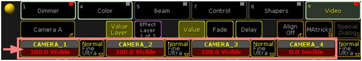

Virtual Output: Configuration of a TripleHead2Go Digital Port
The following example shows the configuration of a TripleHead2Go Digital DisplayPort in 3xHD:
To use the right product consider that the card has DVI-In- and Outputs!
Inside the Pixelmapper Setup
- First step is to create an ”Area“ (see figure below). It’s helpful to use the same ratio when applying values for the dimensions as they will be used for the “Virtual Outputs“ - in this case e.g. 12.8 x 7.2 meters. It actually matters only for the visualization inside the Pixelmapper and has no influence to the final output
- Next step is to create inside the area “TripleHead2Go” Digital three “Virtual Outputs” each with a resolution of 1280x720. Next is the assignment of IDs for the "Virtual Outputs", (column “Virt Out”, e.g. 1..3) and for the cameras (column Camera, e.g. 1..3). When a "Virtual Output ID" was entered the entry inside the column RenderIP of the same line will be automatically removed as no pixelmapper is to be used together with this output. The "Virtual Output ID" is important for mapping to layers. The individual attributes of the “Virtual Outputs” (e.g. Softedge) can be adjusted by selecting the proper camera by “Camera ID”.
- The complete content which will finally range over all three displays will be played back using e.g. “Layer 1” with a resolution of e.g. 3712x720.
- Layer 1 will be parameterized in a way (using a MA Lighting console or onPC) that it is only visible for Camera 1, 2 and 3 (which are already linked with the corresponding “Virtual Outputs”).

- Camera 1 and 3 will be shifted in a way to only show the wanted selection by using VCamPosX.
- The Softedge Parameter needs to be properly adjusted from the console or onPC software (Example for Camera 1, which is assigned to left part of the image)
- Provided Softedge is adjusted correctly the Camera Layer display of the VPU looks now like this:
Inside the Multipreview the “Virtual Outputs” are displayed in the following way:
- Layer 2, 3 and 4 (referring to the figure below) are the carrier to apply the content of the virtual Outputs 1-3 via the channelsets "Virtual Input 1-3" . Layer 2 receives its input from the virtual Output 1 via the virtual Input 1. Respectively Layer 3 receives its input virtual Output 2 via the virtual Input 2. Analog the same is true for Layer 4 and virtual Output 3.
- Layer 2, 3 and 4 are parameterized to be only visible by Camera 4. Camera 4 is assigned to the physical DVI output of the VPU.
- The position of Layer 2 and 4 can be shifted by using the VPosX parameter.
The Multipreview display of the Layer 2-4:
- The actual output at the DVI connector is shown below:
- The TripleHead2Go splits this signal into three independent single pictures. When send to three projectors and taken the soft edged overlap into account the complete images on the canvas looks like one big.
The above described example uses only one Layer for rendering the virtual outputs. The number of Layers can be higher and thus the number of possibilities. Virtual Outputs can be used in many more applications. They might be used as an effect, e.g mapping a cube on top of a complete scene consisting of several layers or exceeding the limit of applying just four effects at the same time. When rendering those into a virtual output and use the next four with the final output.